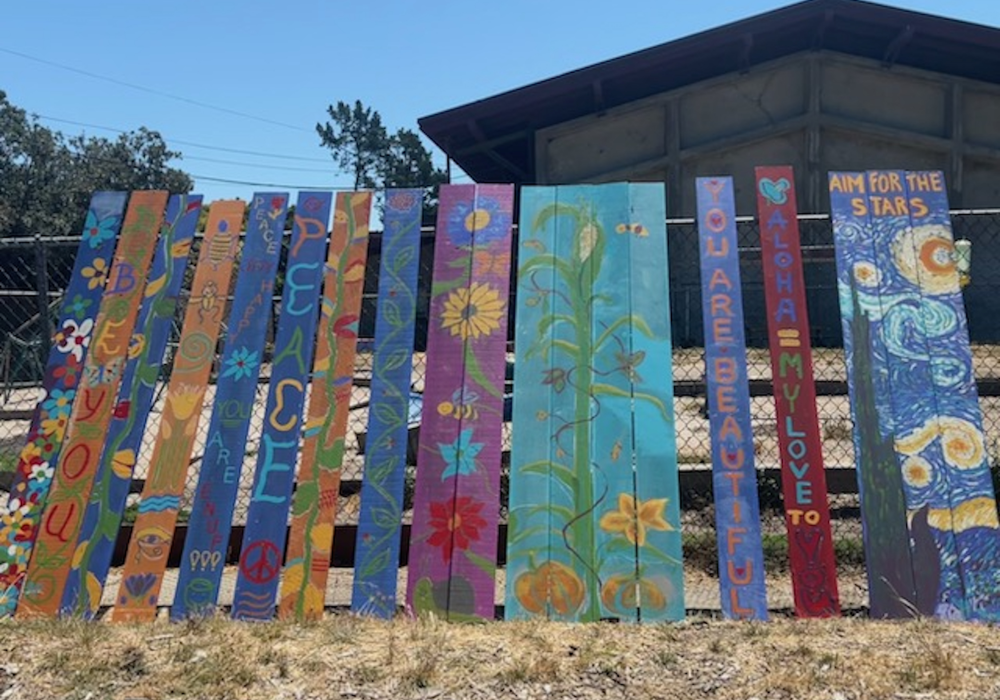

Volunteer
Upcoming Volunteer Opportunities

Join Us at the State Capitol
Rally in Sacramento to demand real funding for new and existing permanent and emergency housing.
Learn More

Plank Painting for the Richmond Tiny House Village
Join us in painting and touching up planks for the Richmond Tiny House Village that will house homeless youth.
Learn MoreFor more information about volunteering, please email tinyvillagespirit@gmail.com
175 23rd Street, Richmond, CA 94804 | Tiny Village Spirit is registered as a 501(c)(3) non-profit organization. Tax ID/EIN: 99-2684195.
Copyright ©2023-2024 Tiny Village Spirit · All Rights Reserved · Made with ❤️ by Ronen Jain